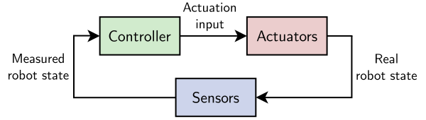
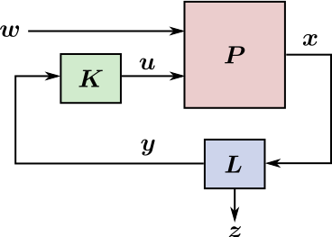

Robots run many layers of software. The layer that decides what actions to take
based on the latest sensor readings is called the controller in control
theory. In reinforcement learning, it is known as the agent.
Feedback loop
In the general sense, robot components can be classified in three categories:
actuation (“the plant”, sometimes simply called “the robot”), sensing and
control. A controller is, by definition,anything that turns robot outputs
(a.k.a. “states”, for instance joint positions and velocities) into new robot
inputs (a.k.a. “controls”, for instance joint accelerations or torques).
Robot outputs are not known perfectly but measured by sensors. Putting these
three components together yields the feedback loop:

If we take the simple example of a velocity-controlled point mass, the input of
your robot is a velocity and its output is a new position. A controller is then
any piece of software that takes positions as inputs and outputs velocities.
Under the hood, the controller may carry out various operations such as
trajectory planning or PID feedback. For instance, a model
predictive controller computes a desired
future trajectory of the robot starting from its current (measured) state, then
extracts the first controls from it and sends it to the robot.
Example of HRP-4
The HRP-4 humanoid robot from Kawada Industries is a position-controlled robot.
- Inputs: desired joint positions
- Outputs: joint angle positions, as well as the position and orientation
of the robot with respect to the inertial frame (a.k.a. its floating base
transform)
Being a mobile robot, it is underactuated, meaning its state has a
higher dimension than its inputs. Measurements of the robot state are carried
out by rotary encoders for
joint angles and using an IMU for the free-flyer
transform. A controller for HRP-4 therefore takes as inputs the robot’s state
(joint positions + position and orientation with respect to the inertial frame)
and outputs a new set of desired positions.
Terminology
Control theory has a bit more terminology to describe the feedback loop above.
Here is the same loop with standard notations from this field:

The real state x of the system is an ideal quantity. Some components
of it may not be observable by sensors, for example the yaw orientation of the
robot with respect to gravity.
- y is the output, the set of observable components in x.
- z is the exogenous output, the set of non-observable components
in x.
- L is the state observer that estimates y from
available sensor readings.
- K is the controller that computes the control input from the
measured state.
- u is the control input by which the controller can act on the plant.
- P is the plant, the external system being controlled, a.k.a.
the robot.
- w is the exogenous input, a set of external causes unseen by the
controller.
The vocabulary of control theory puts the plant-observer at the center, which
is why u is called the control input (although it's an output of
the controller: because it's an input to the plant) and y is called
the output (it's an output of the observer and an input to the controller).
Reinforcement learning
Reinforcement learning frames the same problem with a different terminology. In
reinforcement learning, y is the observation, u is the
action, P is the environment and K is the agent.
Most of the time, exogenous quantiies and the state observer L are
collectively included in P, as reinforcement learning centers on the
agent. The addition of reinforcement learning to classical control theory is a
second input r to the controller representing the reward obtained
from executing action u from state x.
Q & A
How to achieve velocity/acceleration control on a position-controlled
robot?
Sending successive joint angles along a trajectory with the desired
velocities or accelerations, and relying and the robot’s stiff position
tracking.
How to control the underactuated position of the robot in the inertial
frame?
Using contacts with the environment and force control. For instance,
position-controlled robots use admittance control to regulate forces at
their end-effectors.
To go further
Many references explain clearly the terminology used in control theory. I liked
Quang-Cuong Pham’s lecture notes on control theory.
Richard Sutton's common model of the intelligent decision maker is a great step to unify the standpoints
of control theory and reinforcement learning what those of other fields. Beyond
what we've seen above, it introduces the concepts of transition model and
value function as internal components of a general agent.
Discussion
Feel free to post a comment by e-mail using the form below. Your e-mail address will not be disclosed.